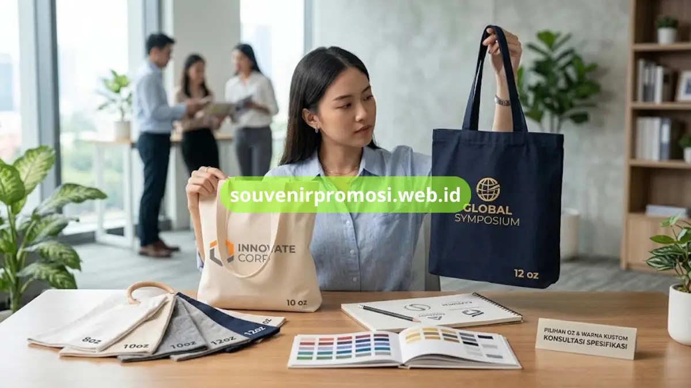

Spesifikasi kanvas tote bag custom ramah lingkungan mencakup ketebalan kain, jenis serat, dan pilihan warna yang tersedia untuk kebutuhan souvenir korporat.
Ketebalan kanvas umumnya diukur dalam satuan oz, mulai dari 8 oz untuk tas ringan hingga 12 oz untuk tas dengan struktur lebih kokoh. Katalog lengkap spesifikasi kanvas tersedia melalui Souvenir Promosi untuk mempermudah instansi menentukan bahan sesuai kebutuhan.
Poin Penting
- Ketebalan kanvas tersedia mulai dari 8 oz hingga 12 oz sesuai kebutuhan penggunaan.
- Kanvas 10 oz cocok untuk penggunaan serbaguna sehari-hari.
- Kanvas 12 oz memberikan struktur lebih kokoh untuk goodie bag event berskala besar.
- Pilihan warna meliputi natural, krem, abu-abu muda, navy, hitam, hingga warna custom.
- Souvenir Promosi menyediakan konsultasi spesifikasi kanvas sesuai kebutuhan dan anggaran instansi.
Daftar Isi
Ketebalan Kanvas yang Tersedia
Ketebalan kanvas menjadi faktor utama yang membedakan karakter tote bag custom. Kanvas 8 oz hingga 10 oz umumnya digunakan untuk tote bag ringan dengan penggunaan kasual, sementara kanvas 12 oz dipilih untuk tas yang perlu menahan beban lebih berat seperti dokumen atau perlengkapan seminar.
Kanvas 10 Oz untuk Penggunaan Serbaguna
Kanvas dengan ketebalan 10 oz sering menjadi pilihan tengah karena kombinasi bobot ringan dan daya tahan yang cukup untuk penggunaan sehari-hari. Ketebalan ini banyak dipesan untuk souvenir korporat yang diharapkan dapat digunakan secara rutin oleh penerima.
Kanvas 12 Oz untuk Struktur Lebih Kokoh
Kanvas 12 oz memiliki tekstur lebih tebal sehingga tote bag lebih mampu berdiri tegak saat diisi barang. Spesifikasi ini umum dipilih untuk goodie bag event berskala besar atau merchandise yang perlu tampil lebih premium di atas panggung maupun booth pameran.

Pilihan Warna Kanvas untuk Souvenir Korporat
Warna kanvas yang tersedia meliputi natural, krem, abu-abu muda, navy, hitam, hingga warna custom sesuai permintaan. Warna natural menjadi pilihan paling umum karena kesan alami sekaligus fleksibel dipadukan dengan berbagai warna logo perusahaan.
Warna Natural dan Krem
Warna natural dan krem memberikan tampilan yang bersih dan mudah dipadukan dengan elemen desain apa pun, termasuk logo dengan banyak warna. Pilihan ini cocok untuk perusahaan yang ingin menampilkan kesan sederhana namun tetap profesional pada souvenir mereka.
Warna Solid Sesuai Identitas Brand
Selain warna natural, kanvas juga dapat dipesan dalam warna solid seperti navy atau hitam untuk menyesuaikan dengan warna korporat perusahaan. Konsistensi warna pada souvenir membantu memperkuat pengenalan brand saat dibagikan ke klien maupun mitra kerja.
Apakah Bahan Kanvas Tergolong Ramah Lingkungan?
Kanvas umumnya terbuat dari serat kapas atau campuran serat alami yang lebih mudah terurai dibandingkan bahan sintetis seperti plastik. Karakteristik ini membuat kanvas menjadi pilihan populer untuk souvenir yang ingin menonjolkan nilai keberlanjutan, meski tingkat keramahan lingkungan tetap dapat bervariasi tergantung proses produksi dan pewarnaan yang digunakan.
Perusahaan yang memprioritaskan aspek keberlanjutan dapat berkonsultasi mengenai jenis kanvas yang digunakan langsung dengan tim Souvenir Promosi sebelum menentukan spesifikasi akhir produk.
Ketersediaan Ukuran Berdasarkan Spesifikasi Kanvas
Ukuran tote bag custom dapat disesuaikan dengan ketebalan kanvas yang dipilih. Kanvas yang lebih tebal umumnya digunakan untuk ukuran standar hingga besar, sementara kanvas yang lebih ringan cocok untuk ukuran mini atau souvenir ringkas.
- Kombinasi spesifikasi bahan dan ukuran dapat didiskusikan secara detail melalui layanan konsultasi Souvenir Promosi.
- Pemilihan ketebalan dan warna kanvas membantu memastikan hasil akhir sesuai kebutuhan acara maupun anggaran instansi.
- Souvenir Promosi siap membantu proses custom dari konsultasi spesifikasi hingga produksi dalam jumlah besar.
Cara Memesan Tote Bag Kanvas Custom Sesuai Spesifikasi
Jangan tunda kebutuhan souvenir ramah lingkungan instansi Anda. Kunjungi katalog lengkap dan ajukan penawaran sekarang di souvenirpromosi.web.id, atau hubungi tim Souvenir Promosi untuk konsultasi ketebalan kanvas, warna, ukuran, dan estimasi kebutuhan sesuai anggaran Anda.